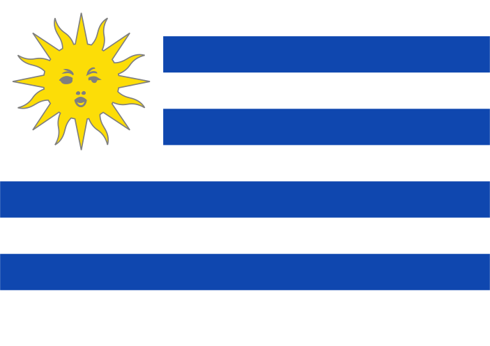
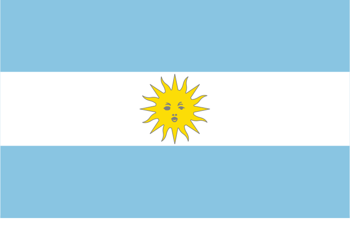
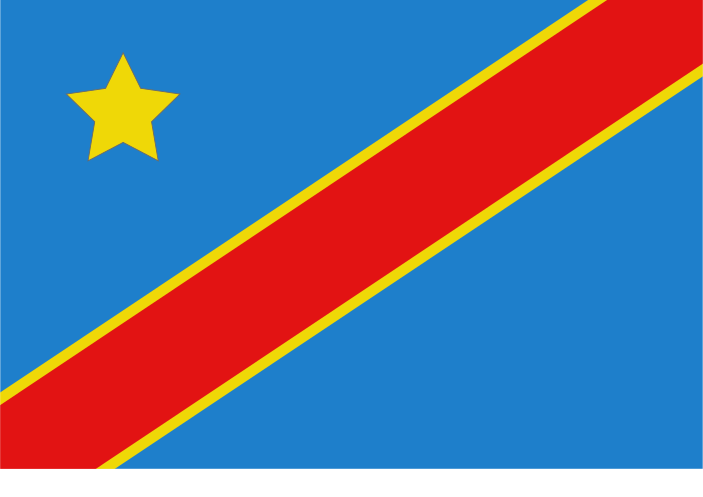
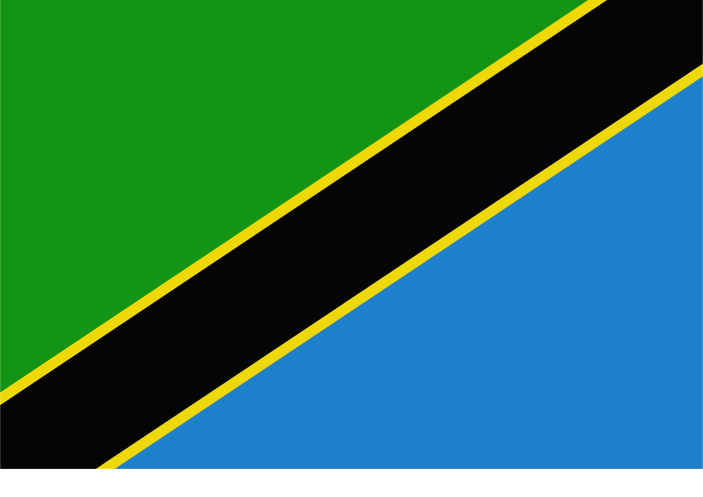

Uruguay - Bandera de los Treinta y Tres Orientales
click here to copy it into the "create" page.


Uruguay - Pabellón Nacional (Uruguayan National Flag)
click here to copy it into the "create" page.

National Flag of Argentina
click here to copy it into the "create" page.

Democratic Republic of Congo National Flag
click here to copy it into the "create" page.

Tanzanian National Flag
click here to copy it into the "create" page.
Trinidad and Tobago National Flag
click here to copy it into the "create" page.